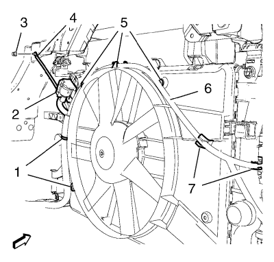
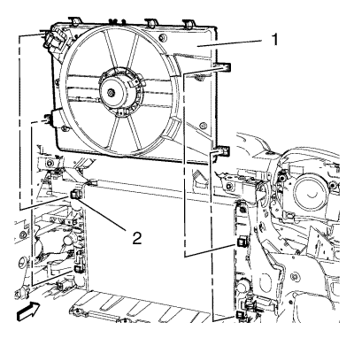
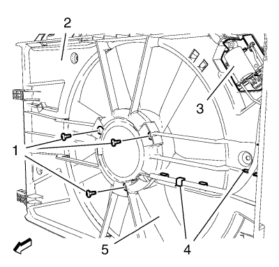

Sustitución de cubierta de ventilador de refrigerante del motor — 1.8L 2H0 - Cambio manual
Procedimiento de desmontaje
- Desconecte el cable negativo de la batería. Consultar Desconexión y conexión del cable negativo de la batería .

- Retire la tuerca del cable de masa (3) y el cable de masa (4).
- Desemborne el enchufe del mazo de cables del resistor del ventilador de refrigeración del motor (2).
- Suelte el mazo de cables del ventilador de refrigeración del motor (6) de los 7 clips del mazo de cables (1, 5, 7). Cuelgue el mazo de cables del ventilador de refrigeración del motor a un lado.

- Suelte la cubierta del ventilador de refrigeración del motor (1) de los 4 puntos de montaje (2).
Nota: Empuje el ventilador de refrigeración del motor hacia la derecha.
- Retire la cubierta del ventilador de refrigeración del motor del radiador tirando hacia arriba.

- Suelte el resistor del ventilador de refrigeración del motor (3) de la cubierta del ventilador de refrigeración del motor (2).
- Suelte el mazo de cables del ventilador de refrigeración de los clips de la cubierta del ventilador de refrigeración del motor (4).
- Retire los 3 tornillos del motor del ventilador de refrigeración del motor (1).
- Retire el ventilador de refrigeración del motor (5) y el motor del ventilador de refrigeración del motor.
Procedimiento de montaje
- Monte el ventilador de refrigeración del motor (5) y el motor del ventilador de refrigeración del motor.
Precaución:Consulte Precaución con las fijaciones en la sección Prólogo.
- Monte los 3 tornillos del motor del ventilador de refrigeración del motor (1) y apriételos a 4 N·m (35 lib. pulg.).
- Fije el mazo de cables del ventilador de refrigeración a los clips de la cubierta del ventilador de refrigeración del motor (4).
- Fije con clips el resistor del ventilador de refrigeración del motor (3) a la cubierta del ventilador de refrigeración del motor (2).
- Monte la cubierta del ventilador de refrigeración del motor (1) en el radiador.
- Fije con clips la cubierta del ventilador de refrigeración del motor a los 4 puntos de montaje (2).
- Coloque el mazo de cables del ventilador de refrigeración del motor (6). Fije el mazo de cables del ventilador de refrigeración del motor a los 7 clips del mazo de cables (1, 5, 7).
- Emborne el enchufe del mazo de cables del resistor del ventilador de refrigeración del motor (2).
- Monte el cable de masa (4) y la tuerca del cable de masa (3) y apriete la tuerca a 10 N·m (89 lib. pulg).
- Conecte el cable negativo de la batería. Consultar Desconexión y conexión del cable negativo de la batería .
| © Copyright Chevrolet. All rights reserved |